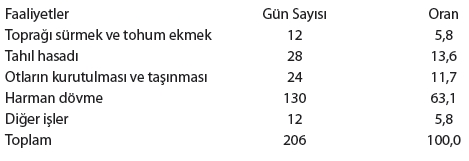

GİRİŞ
John G. Bruhn ve Stewart Wolf, Roseto’daki çalışmaları üzerine iki kitap yayımladılar: The Roseto Story (Norman: University of Oklahoma Press, 1979) ve The Power of Clan: The Influence of Human Relationships on Heart Disease (New Brunswick, N.J.: Transaction Publishers, 1993). Roseto Valfortore, İtalya ile Roseto, Pennsylvania, ABD’nin karşılaştırması için bkz. Carla Bianco, The Two Rosetos (Bloomington: Indiana University Press, 1974). Roseto akademik açıdan topladığı ilgi düzeyiyle Pennsylvania’daki küçük kasabalar arasında benzersiz olabilir.
BİR: MATTA ETKİSİ
Jeb Bush’un kendi kendini yetiştirmiş bir adam olmakla ilgili hayalleri S. V. Dáte’in Jeb: America’s Next Bush adlı kitabında, özellikle sayfa 80-81’de ayrıntılı olarak anlatılmıştır (New York: Jeremy P. Tarcher/Penguin/2007). Dáte şöyle diyor: “Hem 1994 hem de 1998 kampanyalarında Jeb açıkça ifade etti: Altyapısı için özür dilememekle kalmıyor, aynı zamanda mali durumundan gurur duyuyordu ve bunun kendi cesaretinin ve iş etiğinin sonucu olduğundan emindi. ‘Başardığım şey için gerçekten çok çalıştım ve bundan çok gurur duyuyorum’ diyordu 1993’te St. Petersburg Times’a. ‘Hiç suçluluk hissetmiyorum. Yanlış bir şey yaptığımı hissetmiyorum.’”
“Tavrı 1992’de CNN’deki Larry King Live programında sergilediğinin çok benzeriydi: İş fırsatlarına sıra geldiğinde başkanın oğlu olmak konusunda ‘Sanırım, toplamda, bu bir dezavantaj’ diyordu. ‘Çünkü yapabileceğiniz şeylerde sınırlanıyorsunuz.’”
“Bu düşünce biçiminin ancak saplantılı olduğu söylenebilir.”
Paula ve Roger Barnsley’in rölatif yaş etkisini ilk fark ettikleri gün oynamakta olan Lethbridge Broncos, 1974’ten 1986’ya kadar Batı Hokey Ligi’ndeki junior buz hokeyi takımlarından biriydi. 1982-83’te WHL Şampiyonası’nı kazandılar ve üç yıl sonra Saskatchewan’daki Swift Current’a geri getirildiler. Bkz. http://en.wikipedia.org/wiki/Lethbridge_Broncos.
Rölatif yaş etkisine bir genel bakış için bkz. Jochen Musch ve Simon Grondin, “Unequal Competition as an Impediment to Personal Development: A Review of the Relative Age Effect in Sport,” Developmental Review 21, no. 2 (2001): 147-167.
Roger Barnsley ve A. H. Thompson çalışmalarını bir internet sitesine koydular, http://www.socialproblemindex.ualberta.ca/relage.htm.
Kendini gerçekleştiren kehanetler eski Yunan ve Hint edebiyatına kadar uzanır, ancak terim Robert K. Merton tarafından şu kitapta uydurulmuştur: Social Theory and Social Structure (New York: Free Press, 1968).
Barnsley ve ekibi diğer sporlara da el attı. Bkz. R. Barnsley, A. H. Thompson ve Philipe Legault, “Family Planning: Football Style. The Relative Age Effect in Football,” International Review for the Sociology of Sport 27, no. 1 (1992): 77-88.
Beyzbolda rölatif yaş etkisine ilişkin istatistikler Greg Spira’dan alındı, Slate dergisi, http://www.slate.com/id/2188866/.
Amsterdam Üniversitesi’nden A. Dudink, yaş sınırı tarihinin Kanada’da hokeyde görülen yaş hiyerarşisinin aynını nasıl İngiltere Premier Futbol Ligi’nde de yarattığını gösterdi. Bkz. “Birth Date and Sporting Success,” Nature 368 (1994): 592.
İlginçtir, eskiden Belçika’da futbol için yaş sınırı tarihi 1 Ağustos’tu ve o zamanlar en iyi oyuncuların neredeyse dörtte biri Ağustos ve Eylül’de doğmuş olanlardı. Ancak sonra Belçika futbol federasyonu bu tarihi 1 Ocak yaptı ve hiç kuşkusuz, birkaç yıl içinde, Aralık’ta doğmuş seçkin futbolcu neredeyse hiç kalmadı; artık Ocak’ta doğmuş olanlar ezici çoğunluktaydı. Daha ayrıntılı bilgi için bkz. Werner F. Helsen, Janet L. Starkes ve Jan van Winckel, “Effects of a Change in Selection Year on Success in Male Soccer Players,” American Journal of Human Biology 12, no. 6 (2000): 729-735.
Kelly Bedard ve Elizabeth Dhuey’in verilerinin alındığı kaynak: “The Persistence of Early Childhood Maturity: International Evidence of Long-Run Age Effects,” Quarterly Journal of Economics 121, no. 4 (2006): 1437-1472.
İKİ: 10 BİN SAAT KURALI
Bill Joy’un geçmişiyle ilgili tartışmanın büyük bölümü Andrew Leonard’ın Salon makalesinden alındı: “BSD Unix: Power to the People, from the Code,” 16 Mayıs 2000, http://archive.salon.com/tech/fsp/2000/05/16/chapter_2_part_one/index.html.
Michigan Üniversitesi Bilgisayar Merkezi’nin tarihi için bkz. “A Career Interview with Bernie Galler,” okulun Elektrik Mühendisliği ve Bilgisayar Bilimi bölümünde emekli profesör olan Bernie Galler’le röportaj, IEEE Annals of the History of Computing 23, no. 4 (2001): 107-112.
Ericsson ve arkadaşlarının 10 bin saat kuralı hakkında kaleme aldığı birçok harika makaleden biri K. Anders Ericsson, Ralf Th. Krampe ve Clemens Tesch-Römer, “The Role of Deliberate Practice in the Acquisition of Expert Performance,” Psychological Review 100, no. 3 (1993): 363-406.
Daniel J. Levitin’in ustalık kazanmanın 10 bin saat aldığından söz ettiği makale: This Is Your Brain on Music: The Science of a Human Obsession (New York: Dutton, 2006), syf. 197.
Bir dahi olarak Mozart’ın gelişimi Michael J. A. Howe’nin kitabında irdeleniyor, Genius Explained (Cambridge: Cambridge University Press, 1999), syf. 3.
Harold Schonberg’den alıntı yapılan çalışma: John R. Hayes, Thinking and Learning Skills. Vol. 2: Research and Open Questions, ed. Susan F. Chipman, Judith W. Segal ve Robert Glaser (Hillsdale, N.J.: Lawrence Erlbaum Associates, 1985).
Satrançta bu kuralın istisnası olan büyük usta Bobby Fischer için bkz. Neil Charness, Ralf Th. Krampe ve Ulrich Mayr’ın denemesi: “The Role of Practice and Coaching in Entrepreneurial Skill Domains: An International Comparison of Life-Span Chess Skill Acquisition,” The Road to Excellence: The Acquisition of Expert Performance in the Arts and Sciences, Sports and Games, ed. K. Anders Ericsson (Hillsdale, N.J.: Lawrence Erlbaum Associates, 1996), syf. 51-126, özellikle syf. 73.
Zaman paylaşımı devrimi hakkında daha ayrıntılı bilgi için bkz. Stephen Manes ve Paul Andrews, Gates: How Microsoft’s Mogul Reinvented an Industry–And Made Himself the Richest Man in America (New York: Touchstone, 1994), syf. 26.
Beatles’ın biyografisini Philip Norman kaleme aldı, Shout! (New York: Fireside, 2003).
John Lennon ve George Harrison’ın orkestranın Hamburg’da yaptığı başlangıca ilişkin anıları George Harrison, Astrid Kirchherr ve Klaus Voorman tarafından yazılan kitaptan alındı; Hamburg Days (Surrey: Genesis Publications, 1999). Alıntı 122. sayfadan.
Robert W. Weisberg’in Beatles’ı irdelediği –ve pratik yapmak için harcadıkları zamanı hesapladığı– makale: “Creativity and Knowledge: A Challenge to Theories,” Handbook of Creativity, ed. Robert J. Sternberg (Cambridge: Cambridge University Press, 1999): 226-250.
Tarihteki en zengin kişilerin eksiksiz listesi için http://en.wikipedia.org/wiki/Wealthy_historical_figures_2008.
Dipnottaki C. Wright Mills referansının kaynağı The American Business Elite: A Collective Portrait; Journal of Economic History 5 (Aralık 1945): 20-44.
Steve Jobs’ın Bill Hewlett’ın peşine düşmesi Lee Butcher’ın kitabında anlatılıyor, Accidental Millionaire: The Rise and Fall of Steve Jobs at Apple Computer (New York: Paragon House, 1987).
ÜÇ: DEHALARIN SORUNU, 1. BÖLÜM
1 vs. 100 programına Chris Langan’ın katıldığı bölüm 25 Ocak 2008’de yayımlandı. Dipnotta adı geçen Leta Hollingworth’ün “L” ile ilgili anlatımı yayımladığı kitap Children Above 180 IQ (New York: World Books, 1942).
Lewis Terman’ın yaşamına ve dönemine ilişkin diğer mükemmel kaynaklar, Henry L. Minton, “Charting Life History: Lewis M. Terman’s Study of the Gifted,” The Rise of Experimentation in American Psychology, ed. Jill G. Morawski (New Haven: Yale University Press, 1988); Joel N. Shurkin, Terman’s Kids (New York: Little, Brown, 1992); May Seagoe, Terman and the Gifted (Los Altos: Kauffman, 1975). Henry Cowell’a ilişkin tartışma Seagoe’dan alındı.
Liam Hudson’ın IQ testlerinin sınırlarına ilişkin tartışması için Contrary Imaginations: A Psychological Study of the English Schoolboy (Middleessex: Penguin Books, 1967). Hudson’ı okumak büyük bir zevk.
“Michigan’s Minority Graduates in Practice: The River Runs Through Law School” başlıklı Michigan Hukuk Fakültesi çalışması Richard O. Lempert, David L. Chambers ve Terry K. Adams tarafından kaleme alındı, Law and Social Inquiry 25, no. 2 (2000).
Pitirim Sorokin’in Terman’ın yanıldığını gösteren kanıtları şu kitapta yayımlanmıştır: Fads and Foibles in Modern Sociology and Related Sciences (Chicago: Henry Regnery, 1956).
DÖRT: DEHALARIN SORUNU, 2. BÖLÜM
Kai Bird ve Martin Sherwin, American Prometheus: The Triumph and Tragedy of J. Robert Oppenheimer (New York: Knopf, 2005).
Robert J. Sternberg pratik zeka ve benzer konularda çok yazı kaleme almıştır. Akademik seçeneklerin dışında güzel bir anlatım için bkz. Successful Intelligence: How Practical and Creative Intelligence Determine Success in Life (New York: Plume, 1997).
Açıkça ortada olsa gerek, Annette Lareau’nun kitabına bayıldım. Ben sadece savının kısa bir özetini aldığım için, kitabının tamamı okumaya değer, Unequal Childhoods: Class, Race and Family Life (Berkeley: University of California Press, 2003).
Sadece IQ’ya odaklanmanın zorlukları üzerine mükemmel bir diğer tartışma için Stephen J. Ceci, On Intelligence: A Bioecological Treatise on Intellectual Development (Cambridge, Mass.: Harvard University Press, 1996).
Terman’ın çalışmasına ilişkin nazik, ancak eleştirel bir değerlendirme için bkz. “The Vanishing Genius: Lewis Terman and the Stanford Study,” Gretchen Kreuter, History of Education Quarterly 2, no. 1 (Mart 1962): 6-18.
BEŞ: JOE FLOM’DAN ALINACAK ÜÇ DERS
Skadden, Arps’ın ve şirketleri ele geçirme kültürünün tam bir tarihi Lincoln Caplan tarafından yazılmıştır, Skadden: Power, Money, and the Rise of a Legal Empire (New York: Fartar, Straus, and Giroux, 1993).
Alexander Bickel’ın ölüm ilanı 8 Kasım 1974’te New York Times’ta yayımlandı. Röportaj metni Amerikan Musevi Komitesi’nin New York Halk Kütüphanesi’nin arşivinde bulunan sözel tarih projesinden alındı.
Erwin O. Smigel’ın New York’un eski beyaz ayakkabı hukuk şirketlerinden söz ettiği kitap The Wall Street Lawyer: Professional Organization Man? (Bloomington: Indiana University Press:1969). Çalışanlara ilişkin özel tercihleri 37. sayfada yer alıyor.
Louis Auchincloss Manhattan’daki eski moda hukuk şirketlerinde savaş sonrası yıllarda yaşanan değişimler hakkında en çok kalem oynatmış kişidir. Alıntının kaynağı The Scarlet Letters (New York: Houghton Mifflin, 2003), syf. 153.
Bunalım döneminde sosyal spektrumun alt ucundaki avukatların karşı karşıya kaldığı ekonomik çöküş Jerold S. Auerbach tarafından incelenmiştir, Unequal Justice: Lawyers and Social Change in Modern America (Oxford: Oxford University Press, 1976), syf. 159.
Amerika’da yirminci yüzyılda dalgalanma gösteren doğum oranlarına ilişkin istatistikler için http://www.infoplease.com/ipa/A0005067.html.
“Nüfus azalması”nın etkileri Richard A. Easterlin’in şu kitabında incelenmiştir: Birth and Fortune: The Impact of Numbers on Personal Welfare (Chicago: University of Chicago Press, 1987). H. Scott Gordon’ın bir nüfus azalması döneminde doğmuş olan çocukların sahip olduğu koşullara ilişkin zafer türküsü Haziran 1977’de Kaliforniya, Anaheim’da Western Economic Association’ın yıllık toplantısındaki “On Being Demographically Lucky: The Optimum Time to Be Born” başlıklı başkanlık konuşmasının 4. sayfasından alınmıştır. Alıntı 31. sayfadadır.
Musevi avukatların yükselişine ilişkin eksiksiz bir anlatım için bkz. Eli Wald, “The Rise and Fall of the WASP and Jewish Law Firms,” Stanford Law Review 60, no. 6 (2008): 1803.
Borgenicht’lerin hikayesi Harold H. Friedman tarafından anlatılmış ve yayımlanmıştır; The Happiest Man: The Life of Louis Borgenicht (New York: G. P. Putnam’s Sons, 1942).
On dokuzuncu ve yirminci yüzyılda Amerika’ya gelen göçmenlerin çalıştığı çeşitli işler hakkında daha ayrıntılı bilgi için bkz. Thomas Kesner, The Golden Door: Italian and Jewish Immigrant Mobility in New York City 1880-1915 (New York: Oxford University Press, 1977).
Stephen Steinberg’e minnettarım; kitabı The Ethnic Myth: Race, Ethnicity, and Class in America (Boston: Beacon Press: 1982) New York’a gelen Musevi göçmenlere ilişkin çok parlak bir bölüm içeriyor.
Louise Farkas’ın araştırması kendisinin Queens College’daki master tezinin bir parçasıydı: Louise Farkas, “Occupational Genealogies of Jews in Eastern Europe and America, 1880-1924 (New York: Queens College Spring Thesis, 1982).
ALTI: KENTUCKY, HARLAN
Harry M. Caudill’in Kentucky ile güzellikleri ve sorunları üzerine kalem oynattığı kitap Night Comes to the Cumberlands: A Biography of a Depressed Area (Boston: Little, Brown, 1962).
Kömür madenciliğinin Harlan Yönetim Bölgesi üzerindeki etkileri Paul Frederick Cressey tarafından incelenmiştir, “Social Disorganization and Reorganization in Harlan County, Kentucky,” American Sociological Review 14, no. 3 (Haziran 1949): 389-394.
Kentucky’deki diğer kan davalarının yanı sıra kanlı ve karmaşık Turner-Howard kan davası John Ed Pearce’ın harika kitabında anlatılmıştır; Days of Darkness: The Feuds of Eastern Kentucky (Lexington: University Press of Kentucky, 1994), syf. 11.
Aynı çatışmalar Keith F. Otterbein tarafından antropolojik bir perspektiften değerlendirilmiştir; “Five Feuds: An Analysis of Homicides in Eastern Kentucky in the Late Nineteenth Century,” American Anthropologist 102, no. 2 (Haziran 2000): 231-243.
J. K. Campbell’ın “Honour and the Devil” başlıklı denemesinin yer aldığı kaynak: J. G. Peristiany (ed.), Honour and Shame: The Values of Mediterranean Society (Chicago: University of Chicago Press, 1966).
Güneydeki ıssız bölgenin İskoç-İrlandalı kökenleri ve İskoç-İrlandalı konuşma biçimine ilişkin fonetik rehber David Hackett Fischer’ın Amerikan tarihinin ilk dönemleriyle ilgili müthiş çalışmasında bulunabilir; Albion’s Seed: Four British Folkways in America (Oxford: Oxford University Press, 1989), syf. 652.
Güney’deki yüksek cinayet oranları ve bu cinayetlerin spesifik özellikleri John Shelton Reed tarafından irdelenmiştir; One South: An Ethnic Approach to Regional Culture (Baton Rouge: Louisiana State University Press, 1982). Özellikle bkz. 11. bölüm, “Below the Smith and Wesson Line.”
Güneyli mizacının tarihsel nedenleri ve Michigan Üniversitesi’ndeki aşağılama deneyi hakkında daha ayrıntılı bilgi için bkz. Culture of Honour: The Psychology of Violence in the South, Richard E. Nisbett ve Dov Cohen (Boulder, Colo.: Westview Press, Inc., 1996).
Raymond D. Gastil’in “güneylilik” ve ABD’deki cinayet oranları arasındaki karşılıklı ilişki üzerine yaptığı çalışma: “Homicide and a Regional Culture of Violence,” American Sociological Review 36 (1971): 412-427.
Cohen, Joseph Vandello, Sylvia Puente ve Adrian Rantilla ile birlikte Amerika’da kültürel açıdan yaşanan Kuzey-Güney bölünmesi üzerine bir çalışma daha yaptı: “‘When You Call Me That, Smile!’ How Norms for Politeness, Interaction Styles, and Aggression Work Together in Southern Culture,” Social Psychology Quarterly 62, no. 3 (1999): 257-275.
YEDİ: UÇAK KAZALARINA İLİŞKİN ETNİK KURAM
Sivil havacılık kazalarını soruşturmakla görevli resmi bir kuruluş olan Ulusal Ulaştırma Güvenlik Kurulu, Kore Havayolları’nın 801 sefer sayılı uçağının düştüğü kazaya ilişkin Uçak Kaza Raporu’nu yayımladı: NTSB /AAR-00/01.
Üç Mil Adası’na ilişkin dipnot ağırlıklı olarak Charles Perrow’un klasiği niteliğindeki kitapta yer alan analizi temel alıyor; Normal Accidents: Living with High Risk Technologies (New York: Basic Books, 1984).
Kaza başına yedi hata istatistikleri Ulusal Ulaştırma Güvenlik Kurulu’nun gerçekleştirdiği bir güvenlik çalışmasında hesaplanmıştır; “A Review of Flightcrew-Involved Major Accidents of U.S. Air Carriers, 1978 Through 1990” (Safety Study NTSB/SS/-94/01, 1994).
Endişe verici diyalog ve 052 sefer sayılı Avianca uçağının düştüğü kazanın analizi için bkz. National Transportation Safety Board Accident Report AAR-91/04.
Ute Fischer ve Judith Orasanu’nun kokpitte yumuşatılmış anlatım çalışması “Cultural Diversity and Crew Communication” Ekim 1999’da Amsterdam’daki ellinci Uzay Araçları Bilimi Kongresi’nde sunuldu. American Institute of Aeronautics and Astronautics tarafından yayımlandı.
Talihsiz Air Florida kaptan pilotu ile yardımcı pilotu arasındaki diyalog Fischer ve Orasanu tarafından gerçekleştirilen ikinci bir çalışmada yer aldı; “Error-Challenging Strategies: Their Role in Preventing and Correcting Errors,” International Ergonomics Association tarafından üç yılda bir düzenlenen kongrenin on dördüncüsünün ve Ağustos 2000’de Kaliforniya, San Diego’da Human Factors and Ergonomics Society tarafından kırk ikincisi düzenlenen yıllık toplantının bir parçası olarak üretildi.
Uyruğun davranışlar üzerindeki bilinçdışı etkisi formal olarak Geert Hofstede tarafından hesaplanmış ve şu kitapta ana hatlarıyla özetlenmiştir: Culture’s Consequences: Comparing Values, Behaviors, Institutions, and Organizations Across Nations (Thousand Oaks, Calif.: Sage Publications, 2001). 102. sayfada alıntı yaptığı Fransız ve Alman üretim tesislerine ilişkin çalışma M. Brossard ve M. Maurice tarafından gerçekleştirilmiştir, “Existe-t-il un modèle universel des structures d’organisation?,” Sociologie du Travail 16, no. 4 (1974): 482-495.
Hofstede’nin Boyutları havayolu pilotlarına Robert L. Helmreich ve Ashleigh Merritt tarafından uygulandı; “Culture in the Cockpit: Do Hofstede’s Dimensions Replicate?,” Journal of Cross-Cultural Psychology 31, no. 3 (Mayıs 2000): 283-301.
Robert L. Helmreich’in Avianca kazasına ilişkin kültürel analizi “Anatomy of a System Accident: The Crash of Avianca Flight 052,” International Journal of Aviation Psychology 4, no. 3 (1994): 265-284.
Korelilere özgü konuşma biçiminin Amerikalılarla karşılaştırıldığında linguistik açıdan içerdiği dolaylılık Hawaii Üniversitesi’nden Ho-min Sohn tarafından incelenmiştir; “Intercultural Communication in Cognitive Values: Americans and Koreans,” Language and Linguistics 9 (1993): 93-136.
SEKİZ: ÇELTİK TARLALARI VE MATEMATİK TESTLERİ
Pirinç tarımının tarihi ve incelikleri hakkında daha ayrıntılı bilgi için bkz. Francesca Bray, The Rice Economies: Technology and Development in Asian Societies (Berkeley: University of California Press, 1994).
Rakamların mantığı açısından Asya dilleriyle Batı dilleri arasındaki farklar Stanislas Dehaene tarafından irdelenmiştir; The Number Sense: How the Mind Creates Mathematics (Oxford: Oxford University Press, 1997).
Graham Robb, The Discovery of France (New York: W. W. Norton, 2007).
!Kung’ların şaşırtıcı derecede güvenli ve rahat, telaşsız yaşamı Man the Hunter adlı kitabın 4. bölümünde ayrıntılı olarak anlatılmıştır; ed. Jill Nash-Mitchell’ın da yardımıyla Richard B. Lee ve Irven DeVore (New York: Aldine, 1968).
Avrupalı köylülerin yıllık çalışma süresi Antoine Lavoisier tarafından hesaplanmış ve B. H. Slicher van Bath’ın kitabında alıntılanmıştır; The Agrarian History of Western Europe, A.D. 500-1850, çev. Olive Ordish (New York: St. Martin’s, 1963).

Ruslara özgü köylü atasözlerindeki kadercilikle Çinli atasözlerindeki özgüven R. David Arkush tarafından karşılaştırılmıştır; If Man Works Hard the Land Will Not Be Lazy_Entrepreneurial Values in North Chinese Peasant Proverbs,” Modern China 10, no. 4 (Ekim 1984): 461-479.
Öğrencilerin TIMSS’deki ulusal ortalamalarıyla teste iliştirilen anket sorunlarını yanıtlamakta gösterdikleri kararlılık arasındaki karşılıklı ilişki Erling E. Boe, Henry May, Gema Barkanic ve Robert F. Boruch tarafından değerlendirilmiştir; “Predictors of National Differences in Mathematics and Science Achievement of Eighth Grade Students: Data from TIMSS for the Six-Nation Educational Research Program,” Center for Research and Evaluation in Social Policy, Graduate School of Education, University of Pennsylvania. 28 Şubat 2002’de yeniden gözden geçirilmiştir. Sonuçları gösteren grafik 9. sayfadadır.
TIMSS testlerinin yıllara göre sonuçları National Center for Education Statistics internet sitesinde bulunabilir; http://nces.ed.gov/timss/.
Priscilla Blinco’nun “Task Persistence in Japanese Elementary Schools” başlıklı çalışması editörlüğünü Edward Beauchamp’ın yaptığı kitapta bulunabilir: Windows on Japanese Education (New York: Greenwood Press, 1991).
DOKUZ: MARITA’NIN PAZARLIĞI
Paul Tough tarafından kaleme alınan “What It Takes to Make a Student” başlıklı ve 26 Kasım 2006 tarihli New York Times Magazine makalesi devletin Geride Hiç Çocuk Bırakma politikasının etkilerini, eğitimdeki uçurumun nedenlerini ve KIPP gibi ayrıcalıklı okulların etkilerini inceliyor.
Kenneth M. Gold, School’s In: The History of Summer Education in American Public Schools (New York: Peter Lang, 2002) Amerika’da öğretim yılının köklerini beklenmedik ölçüde etkileyici bir biçimde anlatıyor.
Karl L. Alexander, Doris R. Entwisle ve Linda S. Olson’ın yaz tatilinin etkilerine ilişkin çalışması “Schools, Achievement, and Inequality: A Seasonal Perspective,” Education Evaluation and Policy Analysis 23, no. 2 (Yaz 2001): 171-191.
Çapraz ülke verilerinin büyük bölümü Michael J. Barrett’ın “The Case for More School Days” çalışmasından alındı; Atlantic Monthly, Kasım 1990, syf. 78.
SONSÖZ: BİR JAMAİKA HİKAYESİ
William M. MacMillan Warning from the West Indies: A Tract for Africa and the Empire kitabının ikinci baskısındaki (U.K.: Penguin Books, 1938) önsözde korkularının nasıl geçtiğini ayrıntılı olarak anlatıyor.
Jamaika’da beyaz egemen sınıfın cinsel maceraları ve ürkütücü cezaları Trevor Burnard tarafından ayrıntılı olarak anlatılmıştır; Mastery, Tyranny, and Desire: Thomas Thistlewood and His Slaves in the Anglo-Jamaican World (Chapel Hill: University of North Carolina Press, 2004).
Amerika’nın güneyinde görülmeyen, Batı Hintlere özgü melez orta sınıf Donald L. Horowitz tarafından tanımlanmıştır; “Color Differentiation in the American Systems of Slavery,” Journal of Interdisciplinary History 3, no. 3 (Kış 1973): 509-541.
1950’lerde Jamaika’daki farklı melez sınıflara ilişkin nüfus ve istihdam istatistikleri Leonard Broom’un denemesinden alınmıştır; “The Social Differentiation of Jamaica,” American Sociological Review 19, no. 2 (Haziran 1951): 115-121.
Joyce Gladwell’in siyah bir kadın olarak İngiltere’de yaşadıkları Brown Face, Big Master (Londra: Inter-Varsity Press, 1969) kitabından alındı. Harika bir kitap. Şiddetle öneririm; ancak, tahmin edebileceğiniz gibi, bu konuda bir parça önyargılı olabilirim.